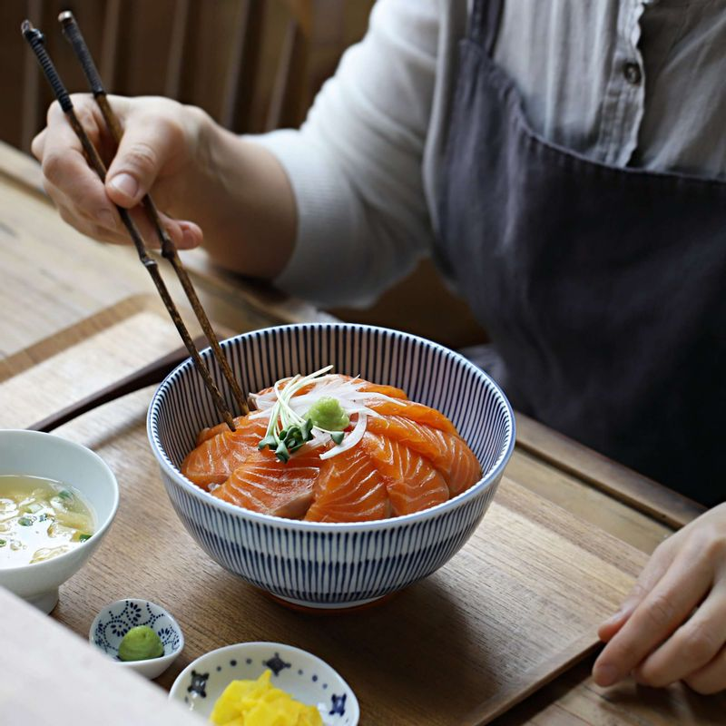

간장물 재료의 야채들을 큼직하게 썰어 가츠오부시를 제외한 간장물 재료들과 냄비에 넣고, 끓으면 약한불로 줄여 15분 정도 더 끓인 후 가츠오부시를 넣고 불을 꺼주세요.
간장물 재료의 야채들을 큼직하게 썰어 가츠오부시를 제외한 간장물 재료들과 냄비에 넣고, 끓으면 약한불로 줄여 15분 정도 더 끓인 후 가츠오부시를 넣고 불을 꺼주세요.
2분 후에 체로 건더기를 걸러내고 식혀주세요.
 양파는 굵게 채썰고, 홍고추와 청양고추는 송송 썰어주세요. 레몬은 반달링으로 썰어주세요.
양파는 굵게 채썰고, 홍고추와 청양고추는 송송 썰어주세요. 레몬은 반달링으로 썰어주세요.
 연어는 맛술 1큰술을 뿌린 후 키친타월로 물기를 닦고, 먹기 좋은 두께로 썰어주세요.
연어는 맛술 1큰술을 뿌린 후 키친타월로 물기를 닦고, 먹기 좋은 두께로 썰어주세요.
 밀폐용기에 연어를 담은 후 손질한 야채를 올리고, 식혀 놓은 간장물을 부어주세요.
밀폐용기에 연어를 담은 후 손질한 야채를 올리고, 식혀 놓은 간장물을 부어주세요.
 연어장을 냉장고에 넣어 5시간 정도 숙성시켜주세요.
연어장을 냉장고에 넣어 5시간 정도 숙성시켜주세요.
(냉장보관해서 이틀 정도 안에 드시는 것이 맛있답니다)
 연어 덮밥으로 드실 경우, 무순은 끝 부분을 자른 후 깨끗이 씻어 준비하고 양파는 곱게 채썰어 찬물에 5분 정도 담갔다가 물기를 제거해주세요.
연어 덮밥으로 드실 경우, 무순은 끝 부분을 자른 후 깨끗이 씻어 준비하고 양파는 곱게 채썰어 찬물에 5분 정도 담갔다가 물기를 제거해주세요.
 그릇에 밥을 봉긋하게 담고 연어장을 돌려 담은 후 무순과 양파채, 와사비를 올려주세요.